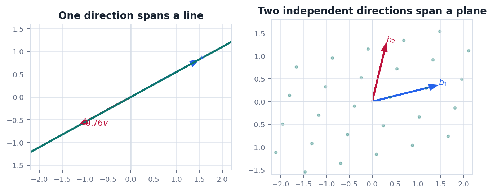
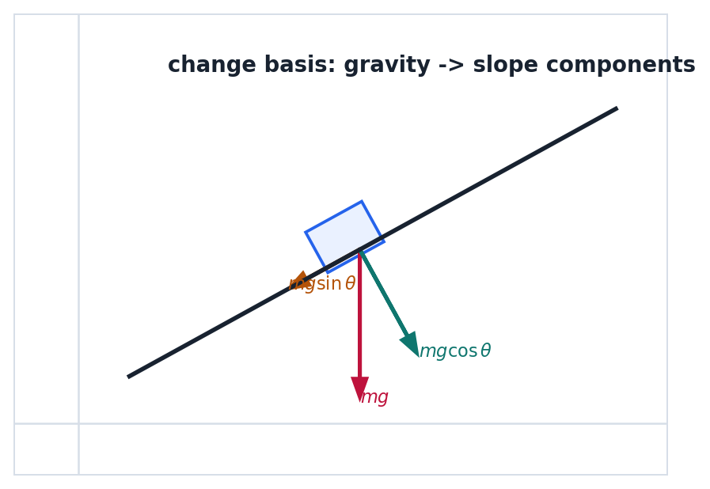

Route
0. 全章主线
向量空间回答哪些对象可以加, 可以数乘, 可以用坐标描述.
向量有加法和数乘的对象.
线性组合用已有方向拼出新对象.
张成所有能拼出的集合.
无关没有冗余方向.
基和维数最小且完整的坐标系统.
Object
1. 向量可以不只是箭头
只要满足加法和数乘规则, 函数, 多项式, 信号片段也可以成为向量.
初学时向量常被画成箭头, 但真正重要的是线性结构. 例如一段离散传感器信号可以写成 $x=(x_1,\dots,x_n)$, 一个多项式可以写成系数向量, 一张灰度图可以拉平成很长的向量.
$$
c_1v_1+c_2v_2+\cdots+c_kv_k
$$
这个表达式叫线性组合. 线性代数的大量问题都可以转化为: 目标对象能否由一组已知对象线性组合出来?
Basis
2. 张成, 无关, 基
张成表示覆盖能力, 无关表示没有冗余, 基要求两者同时成立.
张成$\operatorname{span}\{v_1,\dots,v_k\}$ 是所有线性组合的集合.
线性无关只有所有系数都为零时, 线性组合才等于零向量.
基既能张成整个空间, 又线性无关. 每个向量坐标唯一.
$$
c_1v_1+\cdots+c_kv_k=0\Rightarrow c_1=\cdots=c_k=0
$$
基不是"随便挑几个向量", 而是一个没有冗余且表达能力完整的方向系统.
Subspaces
3. 四个基本子空间
一个矩阵天然带着列空间, 零空间, 行空间和左零空间.
| 子空间 | 定义 | 回答的问题 |
|---|---|---|
| 列空间 | $C(A)=\{Ax:x\in\mathbb{R}^n\}$ | 哪些 $b$ 可以被 $Ax$ 达到? |
| 零空间 | $N(A)=\{x:Ax=0\}$ | 哪些输入会被压成零? |
| 行空间 | $C(A^T)$ | 方程真正约束了哪些输入方向? |
| 左零空间 | $N(A^T)$ | 输出空间里哪些方向永远到不了? |
$$
\dim N(A)+\operatorname{rank}(A)=n
$$
这就是秩-零度定理的初步形态: 输入维数被分成"能被看见的方向"和"会消失的方向".
Geometry
4. 几何图像: 张成和分量
把向量画出来, 冗余方向和基的意义会自然出现.


Physics
5. 物理问题: 斜面分解和约束方向
受力分解本质上是在选择适合问题的基.
问题物体在斜面上运动时, 把重力 $mg$ 分解成沿斜面方向和法向方向, 会比用水平竖直坐标更直接.
$$
mg_{\parallel}=mg\sin\theta,\quad mg_{\perp}=mg\cos\theta
$$
这说明"坐标"不是向量本身. 坐标只是向量在某组基下的数字表示. 选对基, 问题会明显变简单.
Checklist
6. 实战清单与易错点
空间题要同时检查生成能力和是否冗余.
实战清单
- 对象是否在同一个向量空间里?
- 要证明的是张成, 无关, 还是基?
- 子空间是否包含零向量并对加法, 数乘封闭?
- 秩和零空间维数是否对应未知数个数?
高频错误
- 把向量个数当成维数.
- 只证明张成就说是基.
- 把列空间和零空间放在同一个空间里比较.
- 忘记零向量不能加入线性无关组.
记住向量空间研究的是可线性组合的对象. 基给出最小完整坐标系统, 维数表示需要多少个独立方向.